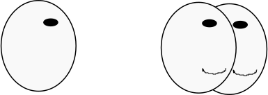

Mediation in Gesprächen

Fahrplan - Was haben wir vor?
- Was ist Mediation?
- Warum Mediation einsetzen?
- Wie geht das?
- Was zum mitnehmen: Tipps für später...
Was ist
Mediation?
Was ist Mediation?
- Mediation (= lateinisch "Vermittlung")
- freiwilliges Verfahren zur konstruktiven Beilegung eines Konflikts
- Erarbeitung einer Lösung durch die Konfliktparteien
- Keine Frage nach Schuld oder Vergangenheit
- tragfähige Basis für Umgang miteinander
Was ist Mediation?
- Der Mediator ist allparteilich
- trifft keine Entscheidungen
- macht keine Vorschläge
- bietet lediglich die Werkzeuge
- Die Medianden können eine eigene Lösung entwickeln
- alle sind zufrieden!
Warum Mediation einsetzen?
Die romantische Erklärung
Warum Mediation einsetzen?
- Ausgangssituation:
- Zwei Parteien geraten in Konflikt miteinander
- Beispiel:
- Streit um die Aufteilung von Kompetenzen innerhalb des Unternehmens
Der klassische Weg
Der Gang zum Gericht
Der Gang zum Gericht
Warum Mediation einsetzen?
- Eine juristische Instanz analysiert die Lage und fällt ein Urteil
- Mindestens eine Partei verliert dabei
- Der gesellschaftliche Umgang miteinander ist weiterhin belastet, oder sogar zerstört
Konfliktklärung durch Mediation
Konfliktklärung durch Mediation
Konfliktklärung durch Mediation

Warum Mediation einsetzen?
- Der Mediator ermöglicht einen Dialog zwischen den Parteien
- Beide Parteien gewinnen, da die Lösung gemeinsam erarbeitet wird
- Der gesellschaftliche Kontakt bleibt erhalten
| 11.06.2012 | Philipp Nowinski | / |
Warum Mediation einsetzen?
Die unromantische Erklärung
Konfliktklärung kostet Geld
Nach der Berechnung beim gerichtlichen Verfahren fragen!
Warum Mediation einsetzen?
- Bei gerichtlichen Verfahren wird die Rechnung aufgrund eines "Streitwertes" gestellt
- dieser kann mitunter relativ groß sein
- Eine Mediation wird in der Regel nach Arbeitsstunden bezahlt
- Je größer der Streitwert, desto lukrativer die Mediation!